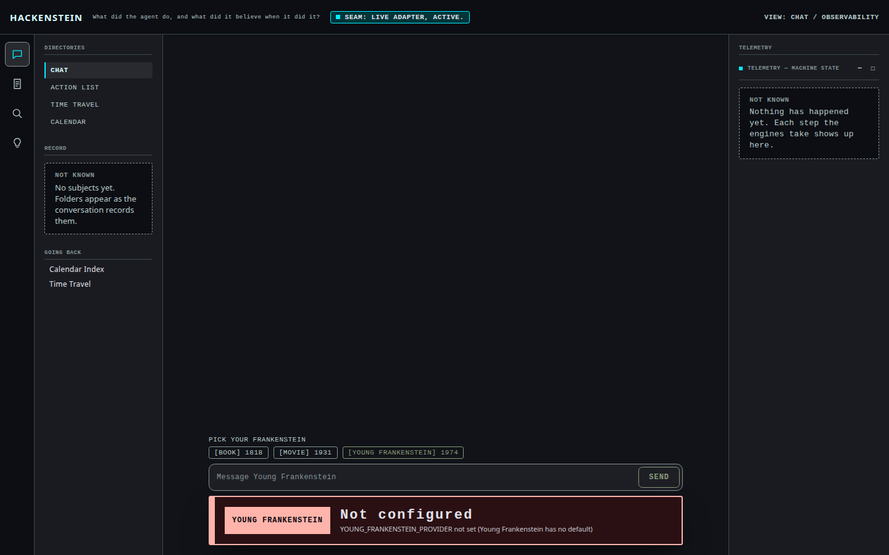
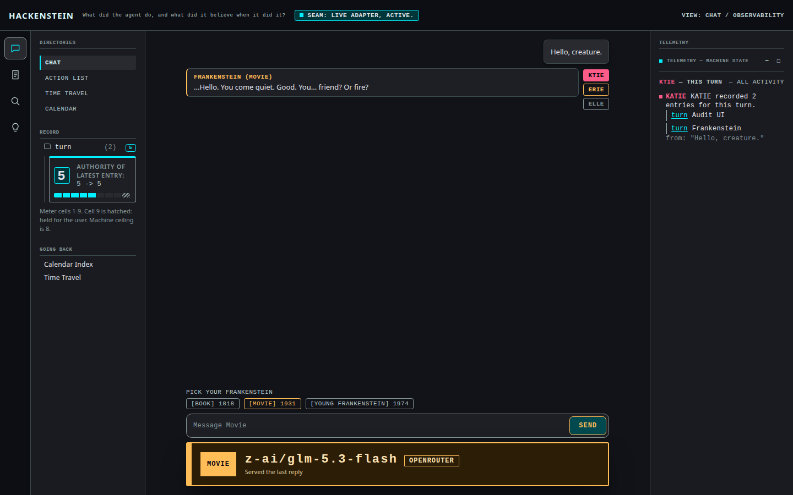

01 — YOUNG FRANKENSTEIN, GREY-GREEN SKIN
The [YOUNG FRANKENSTEIN] 1974 chip picked, in the grey-green skin tone (#8a9a7b); composer reads "Message Young Frankenstein". The band below shows "Not configured" in the error pink by design — Young Frankenstein has no model on the live connector yet, and the error state overrides the band. The skin-green band appears once its model is set.

02 — KTIE, VIBRANT ROSE
A real Movie turn ("Hello, creature." — live GLM reply). The KTIE box on the reply is clicked: solid vibrant rose (#ff5c8a) with black letters, ERIE amber and ELLE dark below it. The terminal shows "KTIE — THIS TURN / KATIE recorded 2 entries for this turn." The Movie band at the bottom is amber.